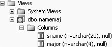
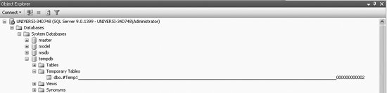
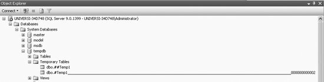
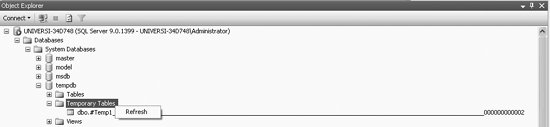

|
|
|
6.3. Derived StructuresDerived structures may become necessary as the queries we build get larger and we have to use a more step-by-step approach to find a result. Derived structures help us to build queries on top of other queries. In this section, we discuss two of the most commonly used derived structuresviews and temporary tables. 6.3.1. ViewsIn SQL, a view (also called a virtual table) is a mechanism to procure a restricted subset of data that is accessible in ways akin to ordinary tables. We use the word "akin" because some operations on views (such as some updates and deletes) may be restricted which otherwise would be allowed if performed on the underlying structure itself. A view serves several purposes:
6.3.1.1. Creating viewsA view can be regarded as a named SELECT statement that produces a result set (a view) that you can further work on. The SELECT statement that is used to create a view can be from one or more underlying tables or from other views in the current or other databases. The general SQL syntax used to create a view is:
CREATE VIEW view_name AS
SELECT ...
The following example creates a view called namemaj, which is a view of students' names and majors from the Student table. To create the view namemaj, type the following in the SQL query editor screen:
CREATE VIEW namemaj AS
SELECT sname, major
FROM Student
And then execute this query in the regular way. A view will be created. You will get the following message:
Command(s) completed successfully.
To view namemaj, click on Views in the Object Explorer, and then click dbo.namemaj and then Columns, as shown in Figure 6-3.
Figure 6-3. Viewing the view namemajA view is a stored SELECT statement. Each time a view is accessed, the SELECT statement in the view is run. 6.3.1.2. Using viewsThe new view can be used just like a table in the FROM clause of any SELECT statement, as shown here:
SELECT *
FROM namemaj
This query will give 48 rows of output, of which we show the first 10 rows: sname major
-------------------- -----
Lineas ENGL
Mary COSC
Zelda COSC
Ken POLY
Mario MATH
Brenda COSC
Romona ENGL
Richard ENGL
Kelly MATH
Lujack COSC
.
.
.
(48 row(s) affected
Just like an ordinary table, a view can be filtered and used in a SELECT. For example, type the following query:
SELECT n.major AS [Major], n.sname AS [Student Name]
FROM namemaj AS n, Department_to_major AS d
WHERE n.major = d.dcode
AND d.dname LIKE 'COMP%'
which produces the following output:
Major Student Name
----- --------------------
COSC Mary
COSC Zelda
COSC Brenda
COSC Lujack
COSC Elainie
COSC Jake
COSC Hillary
COSC Brad
COSC Alan
COSC Jerry
(10 row(s) affected)
6.3.1.3. ORDER BY in viewsSQL Server does not allow you to use an ORDER BY when creating views . For example, if we try to create an ordered view called namemaj1, as follows:
CREATE VIEW namemaj1 AS
SELECT sname, major
FROM Student
ORDER BY sname
we will get the following error message:
Msg 1033, Level 15, State 1, Procedure namemaj1, Line 4
The ORDER BY clause
is invalid in views, inline functions, derived tables,
subqueries, and common table expressions, unless TOP or FOR XML is also specified.
But an ORDER BY can be used in the FROM clause after the view has been created, as shown:
SELECT *
FROM namemaj
ORDER BY major
This query produces 48 rows, of which we show the first 10 rows here:
sname major
-------------------- -----
Smith NULL
Thornton NULL
Lionel NULL
Sebastian ACCT
Harrison ACCT
Francis ACCT
Donald ACCT
Chris ACCT
Gus ART
Benny CHEM
.
.
.
(48 row(s) affected)
6.3.1.4. SELECT INTO in viewsYou cannot use a SELECT INTO statement when creating a view, because it is a combined data definition language (DDL) and data manipulation language (DML) statement, as shown here:
CREATE VIEW new_view AS
SELECT * INTO new_view
FROM Employee
You will get the following error message:
Msg 156, Level 15, State 1, Procedure new_view, Line 2
Incorrect syntax near the keyword 'INTO'.
You can, however, issue a SELECT INTO statement when the view is used in the FROM clause, as shown:
CREATE VIEW new_view AS
SELECT *
FROM namemaj
WHERE major = 'MATH'
You will get:
Command(s) completed successfully.
And now if you type:
SELECT * INTO copy_of_new_view
FROM new_view
You will get:
(7 row(s) affected)
Now if you type:
SELECT *
FROM copy_of_new_view
You will get the following 7 rows:
sname major
-------------------- -----
Mario MATH
Kelly MATH
Reva MATH
Monica MATH
Sadie MATH
Stephanie MATH
Jake MATH
(7 row(s) affected)
6.3.1.5. Column aliases in viewsColumn aliases can be used instead of column names in views. For example, type the following to create a view called namemaj2 with column aliases :
CREATE VIEW namemaj2 AS
SELECT sname AS [name], major AS [maj]
FROM Student
WHERE major = 'COSC'
You will get:
Command(s) completed successfully.
Then type:
SELECT *
FROM namemaj2
This query produces the following 10 rows of output, with the column aliases in the column headings:
name maj
-------------------- ----
Mary COSC
Zelda COSC
Brenda COSC
Lujack COSC
Elainie COSC
Jake COSC
Hillary COSC
Brad COSC
Alan COSC
Jerry COSC
(10 row(s) affected)
To use the column aliases in a query, the name of the view or table alias (in this case, a view alias) has to precede the column alias, as shown in this query:
SELECT namemaj2.[name], namemaj2.[maj]
FROM namemaj2
WHERE namemaj2.[name] LIKE 'J%'
This query produces the following output:
name maj
-------------------- ----
Jake COSC
Jerry COSC
(2 row(s) affected)
The same query could also be written as follows, where n is the table (view) alias:
SELECT n.[name], n.[maj]
FROM namemaj2 AS n
WHERE n.[name] LIKE 'J%'
6.3.1.6. Data in viewsA view consists of a set of named columns and rows of data, just like a real table; however, a view has no data of its own. Data is stored only in the underlying table used to create the view, and not in the view. The view stores only the SELECT statement (rather than the actual data), and data is dynamically produced from the underlying table when the view is used. Therefore, views depend on the underlying tables and act like a filter on the underlying tables. When data in the original table is changed, the view is automatically updated. Therefore, the view is always up to date. And, when data is changed through a view, the original (underlying) table is also automatically updated. 6.3.1.6.1. Changing data in viewsTo demonstrate how changing data through a view automatically updates the original table, begin with the following Employee table, which we created and used in Chapter 5:
names wage hours
--------------- ------------ -----------
Sumon Bagui 10.0000 40
Sudip Bagui 15.0000 30
Priyashi Saha 18.0000 NULL
Ed Evans NULL 10
Genny George 20.0000 40
(5 row(s) affected)
You will get:
(1 row(s) affected)
6.3.1.6.2. Changing data in tablesIf data is changed in the original table, such as our Employee table, the same data in all the views related to this underlying table also gets changed. 6.3.1.7. Deleting viewsA view can be deleted with a DROP VIEW. For example, to delete the view called Employee_view, you would type:
DROP VIEW Employee_view
You will get:
Command(s) completed successfully.
6.3.2. Temporary TablesIn SQL Server , temporary tables reside in SQL Server's default temporary database, tempdb. Every time that SQL Server 2005 is stopped and restarted, a brand new copy of tempdb is built. So temporary tables are automatically destroyed when the user who created them disconnects from SQL Server . Though temporary tables involve extra storage as well as extra programming effort, temporary tables are useful for doing work that requires multiple passes to avoid doing repetitive work. Temporary tables are useful for doing work on a "picture of the data" in the database. As the name implies, no permanent storage of the temporary structure is anticipated; when the use of the temporary data is over, the table is deleted. Data in temporary tables is static and not reflective of updates to the original table(s). As with views, temporary tables may also allow you to develop SQL queries in a step-by-step manner and may be used to simplify complex queries. 6.3.2.1. Creating temporary tablesIn SQL Server , temporary tables are created in the same way that permanent tables are created; that is, with a CREATE TABLE or a SELECT INTO statement; however, temporary table names must begin with either # or ##. 6.3.2.1.1. Creating local temporary tablesLocal temporary tables are created with # in front of the table name and are visible only to the user who is currently connected to the database. They are deleted when the user disconnects from this instance of SQL Server. They are local to the session in which they are created. Thus they are not visible in any other session, not even to one from the same host or login. You cannot have foreign key constraints on a temporary table.
The general SQL Server syntax for creating a local temporary table is:
SELECT column_name, ..., column_name INTO #local_temporary_tablename
FROM permanent_tablename
WHERE...
As an example of how to create a local temporary table, #Temp1, type the following SELECT query:
SELECT s.sname, s.stno, d.dname, s.class INTO #Temp1
FROM Student s, Department_to_major d
WHERE s.major = d.dcode
AND (s.class = 1 or s.class = 2)
AND s.major = 'COSC';
You will get:
(6 row(s) affected)
This query creates a local temporary table called #Temp1. You can use #Temp1 as a regular table for this session. To view the data in #Temp1, type the following:
SELECT *
FROM #Temp1
This query produces the following six rows of output:
sname stno dname class
-------------------- ----- ---------------- -----
Brenda 8 Computer Science 2
Lujack 14 Computer Science 1
Elainie 17 Computer Science 1
Hillary 121 Computer Science 1
Brad 128 Computer Science 1
Alan 130 Computer Science 2
(6 row(s) affected)
You can view the local temporary table from the tempdb under Object Explorer. From the Object Explorer, click Databases, System Databases, tempdb, and then Temporary Tables. You will see the temporary table, #Temp1, as shown in Figure 6-4.
Figure 6-4. Viewing the local temporary table from the Object ExplorerAs in Figure 6-4, in SQL Server 2005, the local temporary table that you create is appended by a system generated suffixa 12-digit number with leading zeros. The local temporary table name that you provide cannot be more than 116 characters, allowing 128 characters for the name of the local temporary table. This is done by SQL Server because SQL Server allows a number of sessions to create a local temporary table with the same name without the names colliding with each other. 6.3.2.1.2. Creating global temporary tablesGlobal temporary tables are created with a prefix of ##. Global temporary tables can be accessed by anyone who logs onto the database, as long as the creator of the global temporary table is still logged on. The global temporary table will be dropped automatically when the session that created it ends and when all other processes that reference it have stopped referencing it. Therefore, even though the process that created the table may have ended, if another process is still using it, then it will still be alive. The general SQL Server syntax for creating a global temporary table is:
SELECT column_name, ..., column_name INTO ##global_temporary_tablename
FROM permanent_tablename
WHERE...
As an example of how to create a global temporary table, type the following SELECT query:
SELECT s.sname, s.stno, d.dname, s.class INTO ##Temp1
FROM Student s, Department_to_major d
WHERE s.major = d.dcode
AND (s.class = 1 or s.class = 2)
AND s.major = 'COSC';
You will get:
(6 row(s) affected)
This query creates a global temporary table called ##Temp1. You can use ##Temp1 as a regular table for this session. To view the data in ##Temp1, type the following:
SELECT *
FROM ##Temp1
You will get the same output given previously (for the local temporary table). A global temporary table can also be viewed from the tempdb option of the Object Explorer. From the Object Explorer, click Databases, System Databases, tempdb, and then Temporary Tables, and you will see the global temporary table, ##Temp1, as shown in Figure 6-5.
Figure 6-5. Viewing the global temporary table from the Object Explorer
You will note that, unlike the local temporary table, the global temporary table does not have a system generated suffix attached to the name of the global temporary table. In fact, when creating global temporary tables, you have to be careful that one with the same name does not already exist, so as to prevent collisions between tables in any one session. There can be only one instance of a global temporary table with any particular name. For example, if you type the following query and try to create another global temporary called ##Temp1:
SELECT s.sname, s.stno, d.dname, s.class INTO ##Temp1
FROM Student s, Department_to_major d
WHERE s.major = d.dcode
AND (s.class = 1 or s.class = 2)
AND s.major = 'MATH';
You will get the following error message:
Msg 2714, Level 16, State 6, Line 1
There is already an object named '##Temp1' in the database.
6.3.2.1.3. Deleting temporary tablesIf you want to delete a temporary table (local or global) before ending the session, you can use the DROP TABLE statement, just as you would to delete a permanent table. For example, with the following query
DROP TABLE ##Temp1
you will get this message:
Command(s) completed successfully.
To view this change (drop), click on select Temporary Tables and then select Refresh, and you will see that the temporary table ##Temp1 no longer exists, as shown in Figure 6-6.
Figure 6-6. Viewing the global temporary table from the Object Explorer |
|
|
|